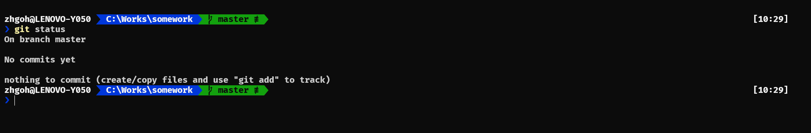

Powerline in Windows Terminal
Few days ago, I came across a git tutorial on YouTube by Scott Hanselman. I strongly encourage people to take a look even if you are proficient enough with git. In his videos, he already did not start right into the git commands but rather he started by introducing the powerline tools for Windows so that you can improve your workflow. In the past, I just use the vanilla Windows Terminal with powershell however after reading through his blog, I think it is actually quite easy to set it up.
I will go through the steps to have your own powerline in Windows Terminal as well as some of the customization I did.
Getting Windows Terminal
I just downloaded it from my Microsoft Windows Store so that is will be automatically updated to stable. Feel free to install it anyway you like.
Installing oh-my-posh
Following the instructions on the oh-my-posh github, do the following command in your Windows Terminal (PowerShell).
Install-Module posh-git -Scope CurrentUser Install-Module oh-my-posh -Scope CurrentUser
It will prompt you if you want to trust the third-party and install their software, go ahead and press Y to accept.
Setting up oh-my-posh
Next step, we will create a new PowerShell profile (similar to a .bashrc)
notepad $PROFILE
If this is your first time creating the profile, notepad will prompt if you want to create the new file, just go ahead and click yes.
Add the following lines in your notepad,
Import-Module posh-git Import-Module oh-my-posh Set-Theme Paradox
Feel free to replace Paradox with any of the following of your choice, (Agnoster, Paradox, Sorin, Darkblood, Avit, Robbyrussel, Material, Star, Zash). The list can be found on oh-my-posh github page.
Setting Nerd Fonts
Now when you open your Windows Terminal, you might notice some of your fonts are boxes, that is because it will be looking for some of the glyphs that will not be included in your standard fonts. Head on over to NERD FONTS and find some fonts that you like. Personally I went ahead with FiraCode Nerd Font. I went ahead and extracted the whole folder, based on the fonts you like, you might install all of them. Do note that some fonts are stated as Windows Compatible and I just went with those. Just right click on the font that you want on your file explorer and click on Install.
After installing the font, open Windows Terminal and then open the settings (click the down arrow -> settings or press Ctrl+,), this will open up an editor (Visual Studio for my case) and you can add the following to your settings.json file.
"fontFace": "FiraCode NF"
You can either put that inside "profiles": {"defaults": {}} like I did
"profiles": { "defaults": { // Put settings here that you want to apply to all profiles. "fontFace": "FiraCode NF" },
or you can put it in the individual profile
"profiles": { "defaults": { // Put settings here that you want to apply to all profiles. }, "list": [ { // Make changes here to the powershell.exe profile. "guid": "{61c54bbd-c2c6-5271-96e7-009a87ff44bf}", "name": "Windows PowerShell", "commandline": "powershell.exe", "hidden": false, "fontFace": "FiraCode NF" },
and save the file.
Complete
Now you can open your terminal, this is how my Windows Terminal looks like now.
